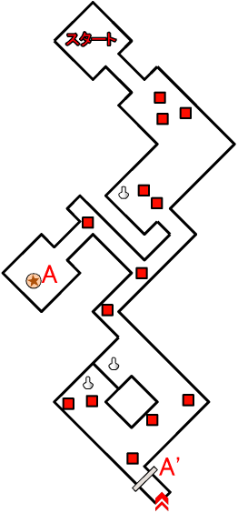
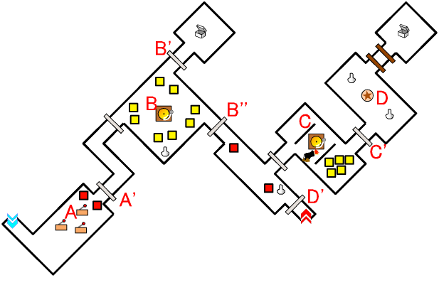
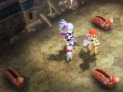
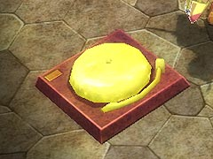
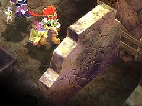
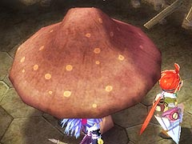
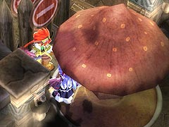

目次 > ゲームについて > 日本Falcom 攻略 > ZWEI II > ダンジョン一覧 > クモの巣坑道(LV.2)
らんの眼
ZWEI II (ツヴァイ 2、ZWEI II Plus)
| 概要 | 情報 | 攻略チャート |
| フード交換 | ペットについて | ボス戦 |
| 敵キャラ一覧 | ハンターランク | G-コロッセオ |
| アイテム一覧 | ガジェット一覧 | トレジャー一覧 |
| ダンジョン一覧 | クリアデータ特典 | Plusの追加要素 |
| ZWEI II攻略へ | 目次へ戻る |
| 第1 階層 |

|
A 地点のスイッチを押すと、A' 地点の扉が開きます。 |
| 第2 階層 |

|  | A 地点のレバーを全て青にすると、A' 地点の扉が開きます。 3 つそれぞれが連動して動くのですが、そんなに複雑ではないので、すぐに突破できるでしょう。 |
|  | B 地点のゴングを鳴らすと、敵が合計8 体出現します。全て倒すと、B' 地点とB'' 地点の扉が開きます。 |
| C 地点のゴングを鳴らすと、大砲と敵が出現します。「アンチトラップ」を持っていなければ、はじめに「爆弾」で大砲を壊したほうが安全です。 また、出現した敵を全て倒すとC' 地点の扉が開きます。 |
|
|
D 地点のボタンスイッチを押すと、D' 地点の扉が開きます。 |
|  | D 地点の崩れかけた壁は、ラグナの攻撃または「爆弾」で破壊できます。 |
| 第3 階層 |

 |
A 地点にいる「ごーれむ」を倒すことで、A' 地点の扉が開きます。 |
 |
B 地点、C地点、そしてD 地点のオブジェを破壊すると敵が出てきます。 特にC、D 地点はG 地点のキノコを移動させるためには破壊せざるを得ないので、注意してください。 |
 |
F 地点に行くと、敵が突然出現します。 |
|  | G 地点のキノコをG' 地点まで持っていくと、扉が開きます。キノコを動かすには「フックギア」を装備する必要があります。 |
|  | G' 地点の扉の先に壷がありますが、これはアルウェンの魔法を使えば扉を開かずとも破壊することができます。 |
| 概要 | 情報 | 攻略チャート |
| フード交換 | ペットについて | ボス戦 |
| 敵キャラ一覧 | ハンターランク | G-コロッセオ |
| アイテム一覧 | ガジェット一覧 | トレジャー一覧 |
| ダンジョン一覧 | クリアデータ特典 | Plusの追加要素 |
| ページの上部へ | ZWEI II 攻略へ | 目次へ戻る |